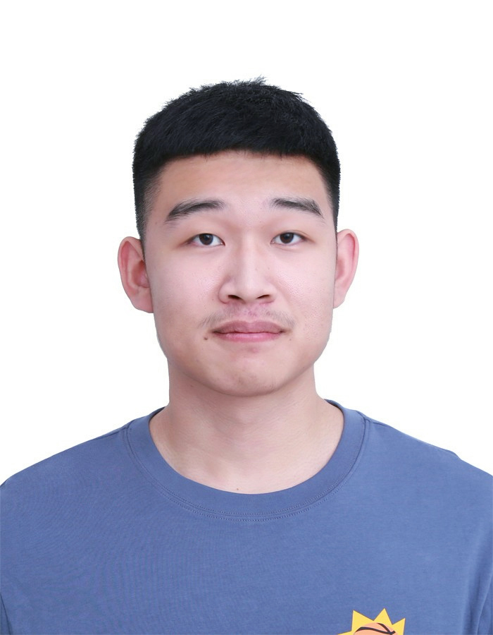

Jun GAO (高骏)

Education
Senior undergraduate in Acoustics at Nanjing University
Research Interests
Audio signal processing
Speech enhancement
Deep learning
Awards
Scholarships
2024, National Scholarship, Nanjing University.